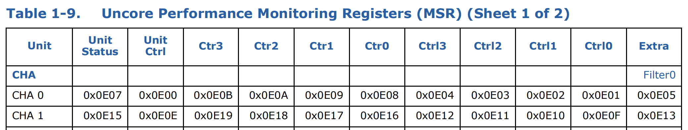
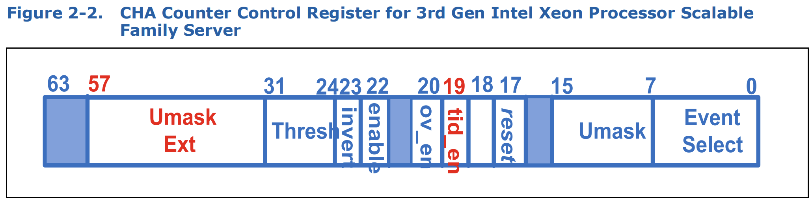
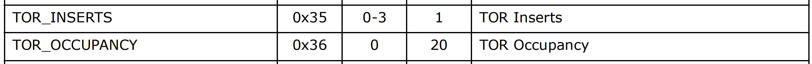
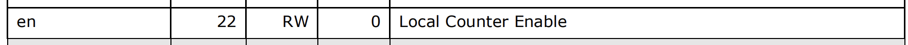
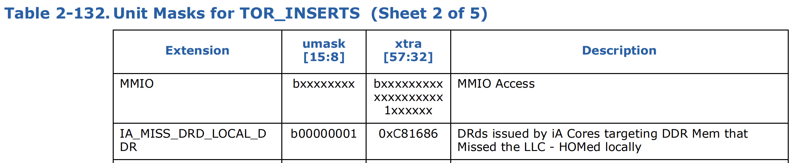
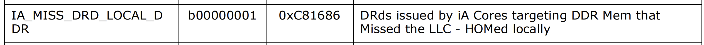
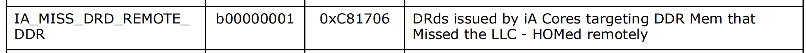
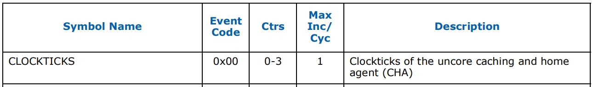

본 글은 논문 Tiered Memory Management: Access Latency is the Key! (SOSP 2024) 의 코드 를 분석해본 글이다.
참고한 것들
개요
Uncore Performance Monitoring Registers

3rd Gen Intel Xeon Processor Scalable Family, Codename Ice Lake, Uncore Performance Monitoring Reference Manual pp.31
- 여기서
Ctr은 counter register 로, counter 값을 가져오는 register 를 의미한다. - 그리고
Ctrl은 control register 로, CHA counter 를 설정하기 위한 register 이다. Filter은 counter 값을 filtering 하기 위한 filter 를 설정하는 filter register 이다.- 각 셀의 16진수 값들은 해당 register 에 대한 주소값이다.
colloid_setup()
- 일단 여기에서 stat 들을 init 하는 것을 확인할 수 있다.
- 우선 MSR 을 file 로서 open 한다.
코드 위치
// Open msr file
char filename[100];
sprintf(filename, "/dev/cpu/%d/msr", cpu);
colloid_msr_fd = open(filename, O_RDWR);
if(colloid_msr_fd == -1) {
perror("Failed to open msr file");
}- 그리고 모든 CHA box 들을 순회하면서, 다음의 작업을 해준다:
1. Init filter
- 우선 filter 를 init 하는데, Colloid 에서는 filter 를 사용하지 않으므로 filter 를
0x00000000으로 초기화해준다.
코드 위치
msr_num = CHA_MSR_PMON_FILTER0_BASE + (0xE * cha); // Filter0
msr_val = 0x00000000; // default; no filtering
ret = pwrite(colloid_msr_fd,&msr_val,sizeof(msr_val),msr_num);
if (ret != 8) {
printf("wrmsr FILTER0 failed for cha: %d\n", cha);
perror("wrmsr FILTER0 failed");
}- 여기서
CHA_MSR_PMON_FILTER0_BASE값은 아래와 같이0x0E05로 지정되는데,
코드 위치
#define CHA_MSR_PMON_FILTER0_BASE 0x0E05L- 이 값은 이 표 에서
CHA 0의Filter 0에 해당하는 값이다. 즉, 이 값을 base 로 CHA box 번호에 따라 address 를 계산하는 것. - 그리고 표에서는 CHA box 번호가 증가할 때마다
Filter 0의 주소가0xE씩 커진다. 그래서 위 코드에(0xE * cha)로 되어 있는 것.
2. Init counters
- 그리고 다음은 Occupancy 와 Insert counter 를 초기화한다.
코드 위치
msr_num = CHA_MSR_PMON_CTL_BASE + (0xE * cha) + 0; // counter 0
msr_val = (cha%2==0)?(0x00c8168600400136):(0x00c8170600400136); // TOR Occupancy, DRd, Miss, local/remote on even/odd CHA boxes
ret = pwrite(colloid_msr_fd,&msr_val,sizeof(msr_val),msr_num);
if (ret != 8) {
perror("wrmsr COUNTER0 failed");
}
msr_num = CHA_MSR_PMON_CTL_BASE + (0xE * cha) + 1; // counter 1
msr_val = (cha%2==0)?(0x00c8168600400135):(0x00c8170600400135); // TOR Inserts, DRd, Miss, local/remote on even/odd CHA boxes
ret = pwrite(colloid_msr_fd,&msr_val,sizeof(msr_val),msr_num);
if (ret != 8) {
perror("wrmsr COUNTER1 failed");
}- 여기서는 우선
CHA_MSR_PMON_CTL_BASE은0x0E01L로 설정되고,
코드 위치
#define CHA_MSR_PMON_CTL_BASE 0x0E01L- 마찬가지로 이 값은 위 표 에서
CHA 0에 대한Ctrl 0의 address 인 것을 알 수 있다.- 즉, filter 때와 마찬가지로 addressing 을 하는 것.
- 그리고
msr_val의 값들에 대해 살펴보자. 이놈은 아래와 같은 구조로 되어 있다.

3rd Gen Intel Xeon Processor Scalable Family, Codename Ice Lake, Uncore Performance Monitoring Reference Manual pp.87
- 우선 하위 4byte (
0x00400135,0x00400136) 부터 먼저 살펴보자. - 저기
Event Selectfield 에의TOR Inserts와TOR Occupancy의 값은 다음과 같다.TOR은 table of request 로, request queue 라고 생각하면 된다.

3rd Gen Intel Xeon Processor Scalable Family, Codename Ice Lake, Uncore Performance Monitoring Reference Manual pp.92
- 즉, 저 4byte 중에서
0x35하고0x36이 각각TOR Inserts와TOR Occupancy를 뜻하는 것. - 그리고 다음
0x01은 Umask (Unit mask) 인데, 이 값이 의미하는 바는 상위 4byte 에서 알아보자. - 또한 다음의
0x4는enablefield 로, local counter 를 enable 한다는 의미이다.

3rd Gen Intel Xeon Processor Scalable Family, Codename Ice Lake, Uncore Performance Monitoring Reference Manual pp.24
- 그리고 중간에 지나친 Unit mask 와 나머지 4byte (
0x00c81686하고0x00c81706) 를 알아보자.- Ice lake 부터는 Unit mask field 와 Unit mask extend field 를 합쳐서 실제 Unit mask 를 설정하게 된다.
- 우선, 위 코드를 보면 CHA 번호가 짝수면 local socket (default tier) 이고, 홀수면 remote socket (alternate tier) 인 것을 알 수 있을 것이다.
- 위 코드에서 local socket 에서의 insert counter 를 위한 unit mask field 와 unit mask extend field 값은 다음과 같다:
- Unit mask field:
0x01 - Unit mask extend field:
0x00c81686
- Unit mask field:
- 그리고 이 값에 대한 설명은 다음과 같다:
- 보면, 이 값은 DRd (data read), locally-attached DDR memory request 인 것을 알 수 있다.

3rd Gen Intel Xeon Processor Scalable Family, Codename Ice Lake, Uncore Performance Monitoring Reference Manual pp.126
- 이 값은 occupancy counter 에도 동일하다.

3rd Gen Intel Xeon Processor Scalable Family, Codename Ice Lake, Uncore Performance Monitoring Reference Manual pp.132
- 또한 remote socket 에서의 insert counter 를 위한 unit mask field 와 unit mask extend field 값은 다음과 같다:
- Unit mask field:
0x01 - Unit mask extend field:
0x00c81706
- Unit mask field:
- 그리고 이 값에 대한 설명은 다음과 같다:
- 보면, 이 값은 DRd (data read), remotely-attached DDR memory request 인 것을 알 수 있다.
3rd Gen Intel Xeon Processor Scalable Family, Codename Ice Lake, Uncore Performance Monitoring Reference Manual pp.126
- 마찬가지로 이 값은 occupancy counter 에도 동일하다.

3rd Gen Intel Xeon Processor Scalable Family, Codename Ice Lake, Uncore Performance Monitoring Reference Manual pp.132
- 즉, 정리하자면 이 unit mask 로 어떤 tier 의 memory 에 대한 request 를 count 할지 지정하게 된다.
3. Init clocktics
- 다음으로는 timing 을 위해 clocktick counter 를 초기화해준다.
코드 위치
msr_num = CHA_MSR_PMON_CTL_BASE + (0xE * cha) + 2; // counter 2
msr_val = 0x400000; // CLOCKTICKS
ret = pwrite(colloid_msr_fd,&msr_val,sizeof(msr_val),msr_num);
if (ret != 8) {
perror("wrmsr COUNTER2 failed");
}- 여기서
msr_val이0x400000인 것은 clocktick 의 event select 가0x00이기 때문이다:

3rd Gen Intel Xeon Processor Scalable Family, Codename Ice Lake, Uncore Performance Monitoring Reference Manual pp.92
Init stats
- 위의 내용까지가 각 CHA box 를 순회하면서 counter 들을 Init 하는 내용이었고, 마지막으로 HeMem + Colloid 에서 사용할 statistics 들을 초기화하면서 이 함수는 끝난다.
코드 위치
// Initialize stats
for(cha = 0; cha < NUM_CHA_BOXES; cha++) {
for(ctr = 0; ctr < NUM_CHA_COUNTERS; ctr++) {
cur_ctr_tsc[cha][ctr] = 0;
cur_ctr_val[cha][ctr] = 0;
sample_cha_ctr(cha, ctr);
}
}
smoothed_occ_local = 0.0;
occ_local = 0.0;
smoothed_occ_remote = 0.0;
occ_remote = 0.0;
smoothed_inserts_local = 0.0;
inserts_local = 0.0;
smoothed_inserts_remote = 0.0;
inserts_remote = 0.0;
p_lo = 0.0;
p_hi = 1.0;sample_cha_ctr()
- 이 함수에서는 CHA counter 를 읽는 것을 한다.
코드 위치
msr_num = CHA_MSR_PMON_CTR_BASE + (0xE * cha) + ctr;
ret = pread(colloid_msr_fd, &msr_val, sizeof(msr_val), msr_num);
if (ret != sizeof(msr_val)) {
perror("ERROR: failed to read MSR");
}- 여기에서도 MSR 을 읽는 것은 유사하게 작동한다:
CHA_MSR_PMON_CTR_BASE값은 위 표 에서CHA 0의Ctr 0에 해당하는0x0E08로 설정되고,
코드 위치
#define CHA_MSR_PMON_CTR_BASE 0x0E08L- 이것과
cha,ctr을 조합해서 해당 register 의 값을 읽어온다. - 읽어온 값은 아래처럼 기존의
cur_값을prev_로 옮기고cur_을 업데이트하는 것으로 저장된다. - 또한, 읽어왔을 때의 시간도
rdtscp()(read timestamp counter and process ID) 로 저장한다.
코드 위치
prev_ctr_val[cha][ctr] = cur_ctr_val[cha][ctr];
cur_ctr_val[cha][ctr] = msr_val;
prev_ctr_tsc[cha][ctr] = cur_ctr_tsc[cha][ctr];
cur_ctr_tsc[cha][ctr] = rdtscp();colloid_update_stats()
- 이 함수에서는 [[#[sample_cha_ctr()](https //github.com/webglider/hemem/blob/1b442e5758b14c557cfa06bbc93ba6cec0735387/src/pebs.c L152-L166)|sample_cha_ctr()]] 를 호출해 CHA counter 를 읽어오고, (counter 값이 아닌) occupancy 와 insert count 를 계산한다.
- 일단 아래에서 counter value 들을 다 읽어온다.
- 여기서
CHA0은 local,CHA1은 remote 이고 CTR0은 occupancy,CTR1은 inserts 이다.
- 여기서
코드 위치
// Sample counters and update state
// TODO: For starters using CHA0 for local and CHA1 for remote
sample_cha_ctr(0, 0); // CHA0 occupancy
sample_cha_ctr(0, 1); // CHA0 inserts
sample_cha_ctr(1, 0);
sample_cha_ctr(1, 1);- 그리고 다음의 코드에서 occupancy 를 계산한다.
- 보면
cur_와prev_간의 차이를 통해 두 counter 값의 차이로 occupancy 값 (cum_occ) 을 계산하고, - 그것을 시간차 (
delta_tsc) 로 나눠 단위시간당 occupancy (cur_occ) 를 계산하며 - 여기서 EWMA 로 값을 조정해
smoothed_occ_local을 구해내는 것을 알 수 있다.
- 보면
코드 위치
cum_occ = cur_ctr_val[0][0] - prev_ctr_val[0][0];
delta_tsc = cur_ctr_tsc[0][0] - prev_ctr_tsc[0][0];
cur_occ = ((double)cum_occ)/((double)delta_tsc);
occ_local = cur_occ;
smoothed_occ_local = COLLOID_EWMA*cur_occ + (1-COLLOID_EWMA)*smoothed_occ_local;- 또한 다음의 코드에서 inserts 를 계산한다.
- 여기서도 마찬가지로
cur_와prev_간의 차이를 통해 inserts 값 (cum_inserts) 를 구한다. - 다만 이 값을 timestamp 로 나눠 rate 를 계산해야 되는데, 이것은 나중에 하는지 여기서는 주석처리되어 있고
cum_inserts값이 그대로inserts_local로 들어가는 것을 알 수 있다. - 마지막으로 EWMA 로 값을 조정해
smoothed_inserts_local를 계산하게 된다.
- 여기서도 마찬가지로
코드 위치
cum_inserts = cur_ctr_val[0][1] - prev_ctr_val[0][1];
// delta_tsc = cur_ctr_tsc[0][1] - prev_ctr_tsc[0][1];
// cur_rate = ((double)cum_inserts)/((double)delta_tsc);
inserts_local = (double)cum_inserts;
smoothed_inserts_local = COLLOID_EWMA*((double)cum_inserts) + (1-COLLOID_EWMA)*smoothed_inserts_local;- 위의 두 코드는 local 에 관한 것으로, 그 아래에서 remote 에 대해서도 동일하게 수행하는 것을 알 수 있다.
코드 위치
cum_occ = cur_ctr_val[1][0] - prev_ctr_val[1][0];
delta_tsc = cur_ctr_tsc[1][0] - prev_ctr_tsc[1][0];
cur_occ = ((double)cum_occ)/((double)delta_tsc);
occ_remote = cur_occ;
smoothed_occ_remote = COLLOID_EWMA*cur_occ + (1-COLLOID_EWMA)*smoothed_occ_remote;
cum_inserts = cur_ctr_val[1][1] - prev_ctr_val[1][1];
// delta_tsc = cur_ctr_tsc[1][1] - prev_ctr_tsc[1][1];
// cur_rate = ((double)cum_inserts)/((double)delta_tsc);
inserts_remote = (double)cum_inserts;
smoothed_inserts_remote = COLLOID_EWMA*((double)cum_inserts) + (1-COLLOID_EWMA)*smoothed_inserts_remote;